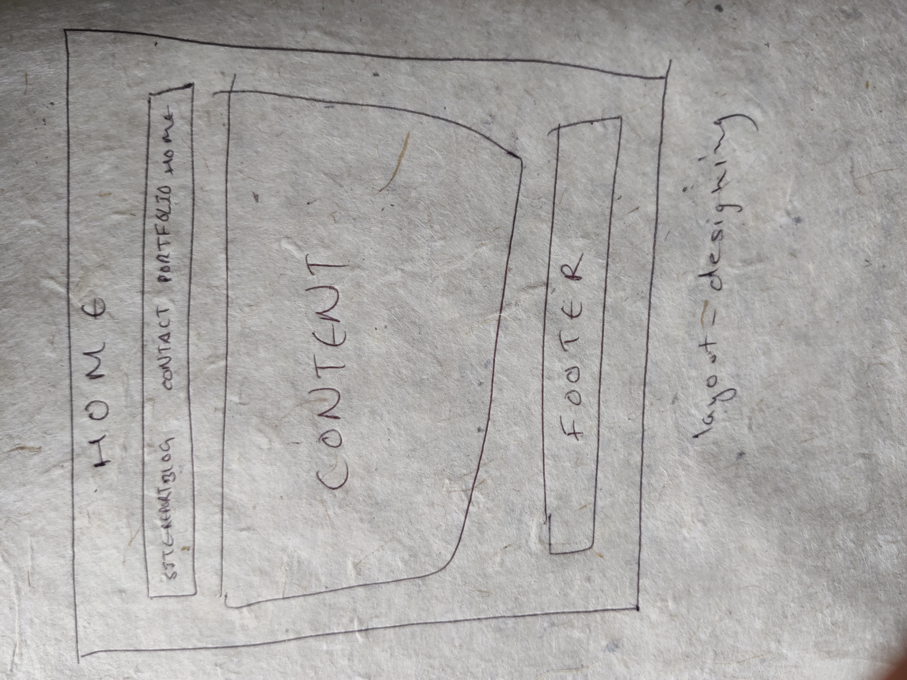

1.Layout Designing
Firstly I decided to make a similar layout for every pages.So,I started with home page but I didn't have a clear plan of what I was going for.So,I made many home pages risking my time duration for submission date.Then I used paper to draw the layout exactly how I wanted.It was a lot tougher than doing in paper. I used sublime text to build my web pages. I managed to to choose the background color of page's body.So, once I found layout design for home page, I copied and pasted the same layout design in other page.The layout contained background color,menu bar and header.
2.Content Management
Secondly,I decide to start filling body with content.I filled the content of every pages according with the content asked from the assignment.Home page had simply "welcome, I am Phurbu Dhundup Tamang" in body and a footer.Portfolio page contained my introduction to the university and display of my skills to use grid which I also used in blog and site-report.Contact page had simple form which we learned in class and the hardest thing in contact page was to launch email when clicked in submit button but I managed it.Blog and site-report was similar in terms of everything but the content's topic they contained were different.To put all of the content took me almost five days.

3)Responsive View
The thing I most focused was responsive view.Starting from day 1 I tried to make web pages responsive but I had to wait all other things to be completed to make web pages responsive.Responsive view was the hardest for me.I had to inspect all my codes and even had to look upto youtube to create better responsive view.It took most of my time while developing web pages.I also tried to include hamburger icon when my web pages are iin mobile view whic was quite difficult.The arrangement of margin,padding and other things took more time than I expected to.Even though I put most time to make my responsive view better there are still some drawbacks.